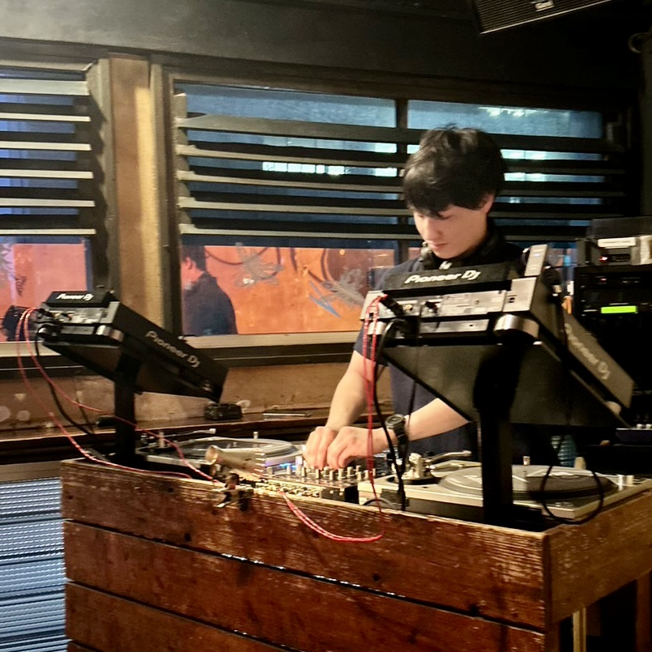

Profile
I started my career as a club DJ at Aoyama Hachi in 2023. My main genres are house and afro beats, and I perform DJ sets that cross various genres, contexts, histories, and regions. During my childhood, I visited Ghana and based on my musical experiences there, I want to convey the greatness of African music, and ultimately Black music, to the world. I specialize in using Logic Pro and other DAWs to prepare special edits that complement my DJ sets.
Career
2023
・DJ and Serving food as SOROKU in LOOP at Aoyama-Hachi
Tune My Music
Check out my latest mix on SoundCloud
Check out my latest playlist on Spotify